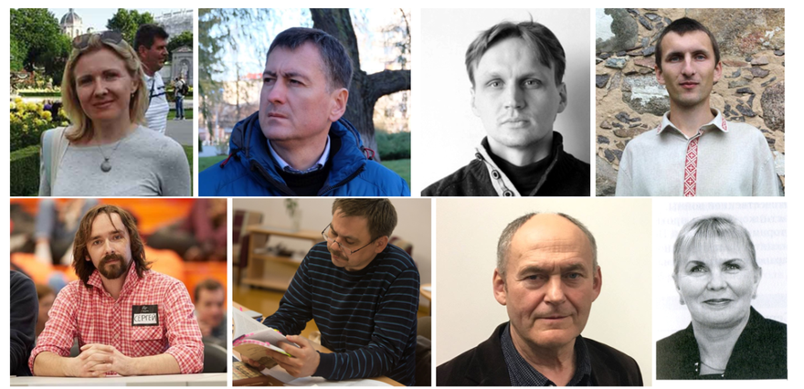

На русском языке На беларускай мове in English Português Deutsch Подписать Список
Мы, представители научного сообщества Республики Беларусь, выражаем свою обеспокоенность чередой увольнений сотрудников институтов Академии наук, активно принимающих участие в общественной жизни страны в целом и Академии наук в частности. Так, за последнее время стало известно о непродлении в Институте истории Национальной академии наук Беларуси контрактов целой группе высококвалифицированных учёных, принимающих наиболее активное участие в работе профсоюза (действительно отстаивающего права сотрудников). В то время как деятельность профсоюзов сегодня признана государством чрезвычайно важной, такой подход особенно удивляет. Особую тревогу вызывает то, что ряд сотрудников, в том числе из Института истории и Института общей и неорганической химии, получили уведомление о непродлении контрактов вскоре после того, как составили независимые экспертные заключения по вопросам, особенно остро волнующим белорусское общество сегодня (пример 1, пример 2 ). Репрессии по отношению к учёным, выполняющим свои прямые профессиональные и общественные обязанности, недопустимы! При этом, озвученные формальные основания увольнения данных сотрудников вызывают у нас обоснованные сомнения. Мы убеждены, что потеря данных кадров повлечёт за собой заметное снижение качества исследований по направлениям, развиваемым учёными из прилагаемого списка. А многие из этих тематик представляют сегодня существенный интерес для белорусского общества и государства. Более того, обстоятельства данных увольнений бросают тень на репутацию Академии наук и её институтов, подрывают доверие учёных к руководству и создают негативную рабочую атмосферу. Мы призываем руководство Академии наук и её институтов отказаться от практики политически мотивированных сокращений и давления на учёных и изыскать возможность продлить контракты вышеназванным сотрудникам.  Список репрессированных Добавлено 26.11.2020: Сергей Бесараб (Институт общей и неорганической химии) На русском языке На беларускай мове in English Português Deutsch Подписать Список Адкрыты ліст вучоных супраць рэпрэсій Мы, прадстаўнікі акадэмічнай навукі Рэспублікі Беларусь, выражаем сваю занепакоенасць шэрагам звальненняў з інстытутаў Акадэміі навук супрацоўнікаў, якія актыўна прымаюць удзел у грамадскім жыцці краіны ў цэлым і Акадэміі навук у прыватнасці. У апошні час стала вядома аб непрацягненні кантрактаў цэлай групе высокакваліфікаваных вучоных Інстытута гісторыі Нацыянальнай акадэміі навук Беларусі, якія найбольш актыўна прымаюць удзел у рабоце прафсаюза (на самой справе абараняюць правы супрацоўнікаў). У цяперашні час, калі дзейнасць прафсаюзаў прызнана дзяржавай як надзвычай важная, такі падыход выглядае дзіўным. Асаблівую трывогу выклікае тое, што вучоныя, у тым ліку з Інстытута гісторыі і Інстытута агульнай і неарганічнай хіміі, атрымалі паведамленнні аб непрацягненні кантрактаў у хуткім часе пасля таго, як падрыхтавалі незалежныя экспертныя заключэнні па пытаннях, што найбольш востра хвалююць сёння беларускае грамадства. Рэпрэсіі ў адносінах да вучоных, якія выконваюць свае прамыя прафесіянальныя і грамадскія абавязкі, недапушчальныя! Важна адзначыць, што пацярпелыя ад падобных рэпрэсій вучоныя маюць высокую кваліфікацыю, мноства публікацый, патэнтаў, добрую рэпутацыю ў міжнароднай навуковай сферы. Спіс рэпрэсіраваных дадаецца да гэтага ліста і, на жаль, пастаянна папаўняецца. Агучаныя фармальныя падставы звальнення супрацоўнікаў выклікаюць у нас абгрунтаваныя сумненні. Мы ўпэўненыя, што страта дадзеных навуковых кадраў выкліча заўважнае зніжэнне якасці даследаванняў па напрамках, якія развівалі вучоныя з прыкладзенага спісу. Тым больш што многія тэмы даследаванняў уяўляюць сёння істотны інтарэс для беларускага грамадства і дзяржавы. Апрача гэтага, абставіны падобных звальненняў кідаюць цень на рэпутацыю Акадэміі навук і яе інстытутаў, падрываюць давер вучоных да кіраўніцтва і ствараюць негатыўную працоўную атмасферу. Мы заклікаем кіраўніцтва Акадэміі навук і яе інстытутаў адмовіцца ад практыкі палітычна матываваных скарачэнняў і ціску на вучоных, заклікаем адшукаць магчымасць працягнуць кантракты пералічаным ніжэй супрацоўнікам. Спіс рэпрэсіраваных Дададзена 26.11.2020: Сяргей Бесараб (Інстытут агульнай і неарганічнай хіміі) На русском языке На беларускай мове in English Português Deutsch Подписать Список The Scientists’ Open Letter Against Repressions We, the representatives of the Belarusian scientific community, voice our concern about the continuing wave of redundancies of The Academy of Sciences Institutes’ employees who have been actively engaged both in civic society and The Academy of Sciences’ community work. A group of highly qualified scientists, actively involved in Trade Unions activities, have been recently informed by The Institute of History of the National Academy of Sciences of Belarus about the non-extension of their contracts. This happened shortly after naming Trade Unions one of the priorities on the agenda by the State official authorities. We are especially concerned by the fact that a number of employees, including those of The Institute of History and The Institute of General and Inorganic Chemistry, were informed about their employment termination shortly after their providing independent expertise on the most topical issues in Belarusian society. We condemn any repression against the scientists fulfilling their primary professional and civic duties! We highlight that the repressed scientists are well qualified and highly respected in the international scientific community, they have long lists of papers published and patents issued. The list of the repressed scientists is attached to this letter and, regretfully, is being extended continuously. Formal grounds for the termination of these scientists’ employment cause solid concerns. We strongly believe that the dismissal of the scientists will detrimentally affect research quality in the fields they are engaged in. Many of the scientific directions developed by them are critical for Belarusian society and the country. Additionally, the circumstances of these dismissals cast a shadow on the Academy of Sciences’ and its Institutes’ reputation, as well as undermine the scientists’ trust to the leadership and negatively influence the work environment. We call on the leadership of the Academy of Sciences and its Institutes to stop politically motivated dismissals and repressions against scientists and to find ways of extending the contracts of the above-mentioned employees. The list of the repressed employees: Added 26.11.2020: Siarhei Besarab (Institute of General and Inorganic Chemistry) На русском языке На беларускай мове in English Português Deutsch Подписать Список Uma carta aberta de cientistas contra repressões Nós, representantes da comunidade científica da República da Belarus, expressamos nossa preocupação com a sucessão de demissões de funcionários dos institutos da Academia das Ciências que participam ativamente na vida pública do país em geral e da Academia das Ciências em particular. Assim, no Instituto de História da Academia Nacional de Ciências da Belarus recentemente foram não prorrogados vários contratos para um grupo de cientistas altamente qualificados que tomam parte mais ativa no trabalho do sindicato (realmente defendendo os direitos dos trabalhadores). Embora as atividades dos sindicatos sejam hoje reconhecidas pelo estado como extremamente importantes, essa abordagem é especialmente surpreendente. A preocupação particular é que vários funcionários, incluindo os do Instituto de História e do Instituto de Química Geral e Inorgânica, tenham recebido um aviso de não renovação de contratos logo após elaboraram pareceres independentes sobre questões especialmente agudas para a sociedade bielorrussa de hoje. Repressões contra cientistas no desempenho de suas funções profissionais e públicas são inaceitáveis! É importante notar que os cientistas submetidos a tais repressões são altamente qualificados, possuem muitas publicações, patentes e tem uma boa reputação na comunidade científica internacional. A lista dos reprimidos está anexada a esta carta e, infelizmente, não para de crescer. Ao mesmo tempo, os fundamentos formais anunciados da demissão desses funcionários nos suscitam dúvidas razoáveis. Estamos convencidos que a perda desses quadros implicará em uma diminuição notável na qualidade da pesquisa nas áreas desenvolvidas pelos cientistas da lista anexa. A maioria desses tópicos é de interesse significativo para a sociedade e para o país também. Além disso, as circunstâncias dessas demissões lançam uma sombra sobre a reputação da Academia de Ciências e seus institutos, minam a credibilidade dos cientistas na liderança e criam uma atmosfera de trabalho negativa. Chamamos a liderança da Academia de Ciências e seus institutos a abandonar a prática de demissões por motivos políticos e pressão sobre os cientistas e encontrar uma oportunidade para renovar os contratos dos funcionários acima mencionados. Lista dos reprimidos Adicionado em 26/11/2020: Siarhei Besarab (Instituto de Química Geral e Inorgânica) На русском языке На беларускай мове in English Português Deutsch Подписать Список Offener Brief von Wissenschaftlern gegen Unterdrückung Wir, Vertreter der wissenschaftlichen Gemeinschaft der Republik Belarus, äußern unsere Besorgnis über eine Reihe von Entlassungen von Mitarbeitern der Institute der Akademie der Wissenschaften, die aktiv am öffentlichen Leben des Landes im Allgemeinen und der Akademie der Wissenschaften im Besonderen teilnehmen. So wurde kürzlich bekannt, dass am Institut für Geschichte der Nationalen Akademie der Wissenschaften Weißrusslands keine Verträge für eine ganze Gruppe hochqualifizierter Wissenschaftler verlängert wurden, die sich am aktivsten an der Arbeit der Gewerkschaft beteiligen (die Rechte der Arbeitnehmer wirklich verteidigt). Doch gleichzeitig werden heute die Aktivitäten der Gewerkschaften vom Staat als äußerst wichtig anerkannt, und dieser Ansatz ist besonders überraschend. Es ist besonders beunruhigend, dass eine Reihe von Mitarbeitern, darunter Mitarbeiter des Instituts für Geschichte und des Instituts für Allgemeine und Anorganische Chemie, kurz nach der Erstellung unabhängiger Gutachten zu Fragen, die die belarussische Gesellschaft heute besonders beschäftigen, eine Mitteilung über die Nichtverlängerung von Verträgen erhalten haben. Politische Verfolgung von Wissenschaftler, die ihre direkten beruflichen und öffentlichen Aufgaben wahrnehmen, ist inakzeptabel! Es ist wichtig anzumerken, dass Wissenschaftler, die solcher Verfolgung ausgesetzt sind, hochqualifiziert sind, viele Veröffentlichungen und Patente haben und in der internationalen wissenschaftlichen Gemeinschaft einen guten Ruf haben. Die Liste der Unterdrückten ist diesem Brief beigefügt und wächst leider ständig. Gleichzeitig lassen die angekündigten formellen Gründe für die Entlassung dieser Mitarbeiter begründete Zweifel aufkommen. Wir sind davon überzeugt, dass der Verlust dieses Personals zu einer spürbaren Verschlechterung der Forschungsqualität in den von Wissenschaftlern aus der beigefügten Liste entwickelten Richtungen führen wird Und viele dieser Themen sind für die heutige belarussische Gesellschaft und den belarussischen Staat von großem Interesse. Darüber hinaus werfen die Umstände dieser Entlassungen einen Schatten auf den Ruf der Akademie der Wissenschaften und ihrer Institute, untergraben die Glaubwürdigkeit der Wissenschaftler in der Führung und schaffen eine negative Arbeitsatmosphäre. Wir fordern die Leitung der Akademie der Wissenschaften und ihrer Institute auf, die Praxis politisch motivierter Entlassungen und des Drucks auf Wissenschaftler aufzugeben und die Möglichkeit zu finden, die Verträge der oben genannten Mitarbeiter zu verlängern. Liste der Verdrängten Hinzugefügt am 26.11.2020: Siarhei Besarab (Institut für Allgemeine und Anorganische Chemie) На русском языке На беларускай мове in English Português Deutsch Подписать Список Список подписавшихся ученых Республики Беларусь
Обновлен 14 января 2021 Представители научного сообщества Республики Беларусь
Представители международного научного сообщества, поддержавшие данное письмо
|